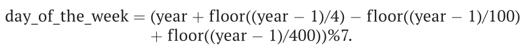

26. На какой день недели выпадает 1 января?
Условие:
Следующая формула может быть использована для определения дня недели, соответствующего 1 января заданного года:

В результате мы получим целое число, представляющее день недели от воскресенья (0) до субботы (6).
Используйте эту формулу для написания программы, запрашивающей у пользователя год и выводящей на экран день недели, на который в заданном году приходится 1 января. При этом на экран вы должны вывести не числовой эквивалент дня недели, а его полное название.
Код:
year = int(input("%50s" % "Введите год: "))
# решение определения дня недели
day_of_the_week = (year + int((year - 1) / 4) - int((year - 1) / 100) + int((year - 1) / 400)) % 7
# продолжение решения (перевод числа в название недели)
day = "" # без создания этой переменной не будут работать следующие условия
day = "Воскресенье" if day_of_the_week == 0 else day
day = "Понедельник" if day_of_the_week == 1 else day
day = "Вторник" if day_of_the_week == 2 else day
day = "Среда" if day_of_the_week == 3 else day
day = "Четверг" if day_of_the_week == 4 else day
day = "Пятница" if day_of_the_week == 5 else day
day = "Суббота" if day_of_the_week == 6 else day
print("%49s" % f"Первое января {year} года:", day)